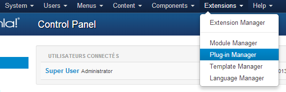

This plugin is only available with the silver or glod pack of AdsManager.
First, you need to enable the plugin in the plugin manager of Joomla.
JomSocial is a component who will create a social network on your website.
This plugin will publish on your JomSocial activity stream the ad you've just wrote.
Core Application: If set on Yes, displays automatically
the user's ads to their profile, otherwise, the user
can choose to display the list or not.
Available Positions: List of the positions where the
list can be displayed.
In the AdsManager Configuration, you can see a 'Third Party' tab, this tab contain a dropbox which allow you to choose the behavior of the user profile in the ads.
Jomsocial - Profile + My Ads:
Jomsocial - Profile:
Note: This feature doesn't work if JomSocial and Community Builder are both installed on your website.